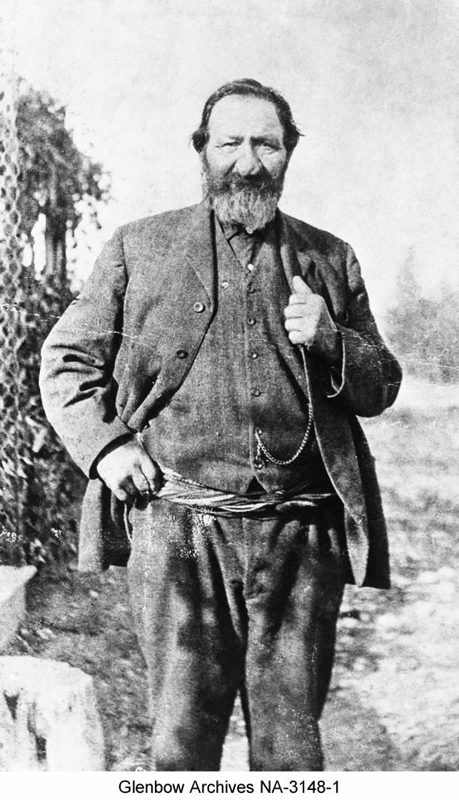
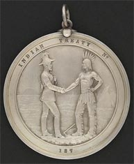
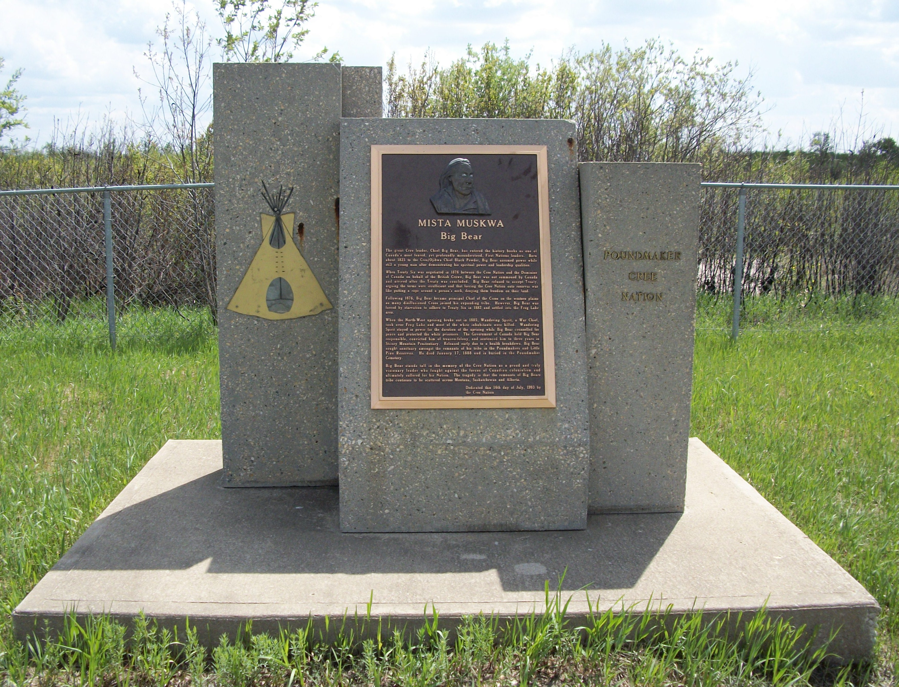

The Story of Treaty Six
| Assiniboine camp in the Cypress Hills |
Canada became a country on July 1, 1867
By 1870 Canada was made up of four provinces: Ontario, Quebec, Nova Scotia, and New Brunswick. Prime Minister John A. Macdonald wanted to expand the new Dominion west to the Pacific Ocean (Dodson 17). In the west, Rupert’s land was owned by the Hudson’s Bay Company and the North West Territories was owned by the British Crown. The Dominion of Canada bought Rupert’s Land for the sum of 300,000 pounds from the Hudson’s Bay Company on March 8, 1869 and at the same time the Crown transferred North West territories to Canada. John A. Macdonald had to protect the west from American expansion after they bought Alaska in 1867 (Natural Resources Canada). John A. Macdonald did not want to go to war with the First Nations as the Americans were in the south to attain lands. British Columbia joined confederation in 1871 and was promised a railway to connect them to eastern Canada. John A. Macdonald envisioned the west as a grain producing region full of European immigrants (Dodson 17). In achieving this, the government had to get permission from the First Nations in the area to surrender their lands and in doing so had to negotiate a Treaty with them. Treaties were signed with First Nations in Canada between 1871 and 1921.
Suffering (1870's)
By the early 1870’s, the plains First Nations were suffering
Not only did smallpox devastate the First Nations populations but the buffalo herds were declining rapidly. The buffalo was the plains First Nations livelihood: their source of food, shelter, clothing, and trading goods. By this time, the only known buffalo herds left were located in the Cypress Hills.
"The Blackfoot and the Cree were fighting to gain control of the Cypress Hills boundaries and in the fall of 1870 there was a battle between them called the “Battle of Belly River.” Big Bear and Little Pine led the Cree’s and attacked a Blood First Nations camp. The next day, well armed Peigans entered the battle and defeated the Cree, approximately 200-400 Crees died in the battle. Eventually the Cree and Blackfoot negotiated peace and access to the Cypress hills." (Dodson 14)
First Nations started hearing rumors that their lands were being sold without their consent. In the face of survival, the Cree started to assemble and meet with one another to discuss their approach to the government. They believed that “the land was sacred. It belonged to no one man and could not be sold” (Christensen 146).
Looking for Help
In 1871, a delegation of Chiefs went to Fort Edmonton to meet with Chief Factor W.J. Christie, the officer in charge of the Hudson’s Bay Company for the Saskatchewan District. Chief Sweetgrass, a well respected leader was chosen to be the spokesman for the meeting with Christie (Christensen 148). After meeting with the First Nation Chiefs, Christie wrote a letter at their request and on their behalf to Lieutenant-Governor Archibald to state what the leaders were asking for and their concerns. He related that the First Nations Chiefs wanted to know if it was true that their lands were being sold. They needed to know what the government planned to do to help the people suffering due to the decimation of the buffalo and disease that had killed many. They wanted assurance of their spiritual and physical survival (Price 20). The First Nations knew that treaties were being negotiated to the east of them and wanted to speak with the government about their future (Miller, Ray and Tough 135).
Rising Concerns (1872 - 1875)
Chief Sweetgrass and Ki-he-win sent this letter to Lieutenant-Governor Archibald:
“Great Father, I shake hands with you, and bid you welcome. We heard our lands were sold and we did not like it; we don’t want to sell our lands; it is our property, and no one has the right to sell them.
Our country is getting ruined of fur-bearing animals, hitherto or sole support, and now we are poor and want help – we want you to pity us. We want cattle, tools, agricultural implements, and assistance in everything when we come to settle- our country is no longer able to support us.
Make provision for us against years of starvation. We had a great starvation the past winter, and the smallpox took away many of our people, the old, young, and children. We want you to stop the Americans from coming to trade on our lands, and giving firewater, ammunition, and arms to our enemies the Blackfeet. Our young men are foolish, it may not last long.
We invite you to come and see us and to speak with us. If you can’t come yourself, send someone in your place. We Send these words by our Master Mr.Christie, in whom we have every confidence – that is all.”
- Chief Sweetgrass
"Great Father, Let us be friendly. We never shed any white man’s blood, and we have always been friendly with the whites, and want workmen, carpenters and farmers to assist us when we settle. I want all my brother Sweetgrass asks. That is all.”
– Ki-he-win
(Price 20).
Rising Concerns
In the years of 1872 to 1875 there was pressure on the Canadian government from the First Nations in the prairies to address treaties. First Nations were alarmed at the various newcomers coming onto their lands and conducting geological surveys for telegraph lines, the railway, and lands for settlement (Tobias 191). This made the Plains Cree very nervous and they confronted the surveyors and warned them to stop what they were doing because the government had not met with them to discuss their concerns.
"Big Bear, Ahtahkakoop, and Mistawasis were the most vocal leaders to stop the developments on their lands. In the summer of 1875, messengers from the Canadian government came to Cree territory to inform them that the government would be coming to negotiate a Treaty with them the following summer of 1876. The two messengers, Rev. George McDougall and North West Mounted Police (NWMP) Inspector Crozier brought presents to give to the Cree, but Big Bear refused them, telling them they did not want presents until the treaties were finalized. Big Bear and others seen the presents as traps, something to soften them up before negotiations." (Dodson 19)
Fort Carlton (1876)
 |
|
Honourable Alexander Morris, Lieutenent -Governor of Manitoba, North-West |
Travel to Fort Carlton
On the afternoon of July 27, 1876, the Honourable Alexander Morris and his treaty party left Fort Garry (present day Winnipeg) and headed northwest along Carlton trail to the Hudson’s Bay Company trading post Fort Carlton (Stonechild and Waiser 10). Situated near the North Saskatchewan River, Fort Carleton was a trading post between 1810 and 1885, and the first site for Treaty 6 negotiations.
Many Chiefs anticipated the arrival of the Queen’s treaty commissioners. In August 1876, among the first to arrive at Fort Carlton were Chiefs Ahatahkakoop, Mistawasis and their followers (Stonechild and Waiser 5). Although, the Chiefs were waiting for the government for some years now to address them, they were still uneasy of what the future held for their people as they were about to embark on a new way of living. Until recent memory, the Plains Cree were masters of their territory, which included much of present-day central Saskatchewan and Alberta. With guns and horses acquired through trade they had driven the Blackfoot and Gros Ventres to the west and south, occupying the rich buffalo-hunting lands of the prairie parkland. Other Nations held them in fear (Stonechild and Waiser 5).
Chief Beardy's Vision
Gov. Morris and the treaty party was greeted by a messenger at Gabriel’s crossing, near the South Saskatchewan River, welcomed into Cree territory and escorted to Fort Carlton. The Crees were advised by members of Yellowquill’s band to prevent the treaty party from crossing the river as they were unhappy about the terms of Treaty 4. Chief Beardy, a spiritual leader known to possess powers, met the treaty party on the journey to the Fort and invited them to meet on a local hill - this was based on a vision he had. Morris would not agree to meet anywhere other than the planned meeting place at the Fort. Chief Beardy then refused to be part of the negotiations at Fort Carlton and Morris understood this would be a problem to the Treaty process for the Willow Cree (Stonechild and Waiser 11). Morris did not understand that Chief Beardy and the Willow Cree declined to negotiate Treaty because it did not follow Beardy's vision, not because of the treaty itself. This became one of many classic misinterpretations of the Treaty process as viewed in history.

Approximately 2,000 Cree, Assiniboine, and Saulteaux people were there to witness and be a part of this historic event, Chiefs Ahtahkakoop and Mistawasis greeted Morris and the Treaty Commissioners on August 15, 1876. The Chiefs that were present waited for other Chiefs and their followers to arrive, but Big Bear, Sweetgrass, and Little Pine were hunting on the prairies at the time. They were unaware of the negotiations at Fort Carlton and thought they would not be coming for another month or so. A messenger was sent for Sweetgrass, but it is unknown why Big Bear and Little Pine didn’t receive the message. So they were not present during the negotiations.
Disagreements
Little Pine and Big Bear were opposed to Treaty negotiations because they believed that the buffalo could still be preserved and that there was a need to regulate the hunting of the buffalo from non-First Nations. Big Bear heard of the disharmony in Treaty 4 territory, they found that the promises of the treaty were not being honored by the government (Dodson 20). Big Bear and Little Pine also believed in the sovereignty of their own Nations and were opposed to the idea of another Nation governing and applying their laws to them. First Nations had practiced their own governance and other systems for thousands of years. They disagreed with many aspects of the Treaty as they found that many of the promises did not provide the Cree with enough security for their future. Even more important, the Chiefs felt that the Treaties would impose European values on the Cree. They felt the treaty did not do enough to protect the Cree 'way of life' and forced assimilation into European culture and 'way of life'. Because of these important disagreements with treaty they would refuse to sign and did all they could to protect what was left of the buffalo herds (Dodson 22). Sadly, in the face of starvation and the inevitable settlement of their lands, Little Pine eventually signed an adhesion to Treaty 6 on July 2, 1879. Big Bear held out on signing an adhesion until 1882.
Negotiations Begin (1876)
. “…what I will promise, and what I believe and hope you will take, is to last as long as the sun shines and yonder rivers flow.”
- Governor Alexander Morris
Negotiating the Terms: Friday August 18, 1876
|  |
| Peter Erasmus, Métis. Alberta |
For several days the Chiefs met and waited for others to arrive. The negotiations began at a traditional camping area the Cree’s called “pehonanik” or the waiting place, located a mile and half from the Fort (Stonechild and Waiser 12). The Queen’s representative, Alexander Morris, dressed in a cocked hat, blue uniform with gold braid and lace, was accompanied by the North West Mounted Police and treaty commissioner’s William J. Christie and James McKay. When they arrived at the council tent they hoisted the union jack - the flag of Britain. The First Nations assembled near the Chief’s tents, to the sound of beating drums and the discharge of small arms, singing, dancing, and loud speaking going on at the same time, as told by A.G. Jackes secretary to the Treaty Commisoner. (Christensen 234)
Pipe Ceremony
Once everyone was assembled at the Council tent, the “pipe stem ceremony” began with all the Chiefs, headmen, singers, and drummers. The bearer of the sacred stem “Wah-wee-kah-nich-ka-oh-tah-mah-hote” (the man you strike on the back) carried the decorated pipe stem, and walked slowly along the semi circle of people to the front. He raised the stem to the heavens, then slowly turned to the north, south, east, and west - presenting the stem at each point. The pipe stem was presented to the Governor and Treaty Commissioners where they stroked the stem. The ceremony ended with dancing, drums, and singing of the men and women in the background (Christensen 235). The significance of the ceremony was an invitation to the Creator to witness the proceedings and provide guidance; it also signified that it committed the participants into telling the truth. (Ray, Miller and Tough 133)
Language Difficulties
The Chiefs hired Peter Erasmus, a Métis, to interpret for them during the proceedings and his role became integral to both sides.  The government had two interpreters; Reverend McKay, who knew Swampy Cree and Saulteaux, and Peter Ballenden, who was a good interpreter in small groups but did not do so well in large group settings. Governor Morris addressed the crowd and asked Erasmus to interpret for him, Erasmus answered back, “I act on behalf of the Chiefs; I am not employed by the government.” McKay translated but was stopped when Chief Mistawasis stood up and said “We are Plains Cree and demand to be spoken to in our language.” Then Ballenden proceeded to translate, however, people in the back of the crowd complained they could not hear him, he tried to speak louder, choked and then sat down (Ray, Miller, and Tough 134). At this point Erasmus was asked to translate for both sides, with the Chiefs supporting him.
The government had two interpreters; Reverend McKay, who knew Swampy Cree and Saulteaux, and Peter Ballenden, who was a good interpreter in small groups but did not do so well in large group settings. Governor Morris addressed the crowd and asked Erasmus to interpret for him, Erasmus answered back, “I act on behalf of the Chiefs; I am not employed by the government.” McKay translated but was stopped when Chief Mistawasis stood up and said “We are Plains Cree and demand to be spoken to in our language.” Then Ballenden proceeded to translate, however, people in the back of the crowd complained they could not hear him, he tried to speak louder, choked and then sat down (Ray, Miller, and Tough 134). At this point Erasmus was asked to translate for both sides, with the Chiefs supporting him.
In Morris’ address he described the government’s genuine concern for the welfare of their Indian brothers and sisters and asked them to take his words with much thought and to look to the future, “…what I will promise, and what I believe and hope you will take, is to last as long as the sun shines and yonder rivers flow.” (Stonechild and Waiser 15).
Negotiations Continue (1876)
“This is our land, not a piece of pemmican to be cut off and given in little pieces. It is ours and we will take what we want.”
- Chief Poundmaker
The treaty negotiations took days to complete at Fort Carlton. There was much debate and discussions that took place with the First Nations participants, but the Queen’s representatives were eager to conclude the deal with the First Nations.
| Poundmaker, Cree Chief |
Discussing the Terms
During discussions, Gov. Morris reassured the First Nations that their way of life and survival would not be disturbed and guaranteed well into the future. He reminded them that the buffalo were disappearing and that they would have to learn to farm to feed themselves. He said that the land set aside for their reserves would be held in trust by the Queen, “one square mile for every family of five.” Poundmaker, a Councilor from Red Pheasant’s band, stood up and protested, “This is our land, not a piece of pemmican to be cut off and given in little pieces. It is ours and we will take what we want.” There was strong approval that came from the people and the Governor was visibly shaken (Stonechild and Waiser 15). Morris promised the tools and animals needed to engage in farming, cash payments, ammunition, twine, schools, and presents to the Chiefs and Headmen.
Doubts
There were a lot of doubts and heavy conversations among the First Nations, they were not convinced that this new way of life would be able to sustain them into the future. A representative from Chief Beardy’s group suggested they “rent” the land while others suggested they refuse the Treaty altogether. It was a tough decision to make.
The First Nations were a proud and strong people but were facing an uncertain future. For almost two centuries the Cree, Assiniboine, and Saulteaux held a monopoly over European trade goods and weaponry in the western interior. They created an “iron alliance” that enabled them to expand across the northern plains. They still controlled the territory and to trade their land for an uncertain future would be an admission of defeat (Stonechild and Waiser 16).
Ensuring Survival
Although there was much dissension from a number of First Nations, it was Ahtahkakoop and Mistawasis who asked the representatives of the Crown what they could offer the people if they did not agree to Treaty. They agreed with much of what was being said, however, they wanted to ensure their survival, and that the Great Queen Mother would look after them. Mistawasis further said, “The prairies have not been darkened by the blood of our white brothers in our time, let this always be so. I for one will take the hand that is offered.” Ahtahkakoop supporting his fellow Chief and said, “Let us not think of ourselves but our children’s children, let us show our wisdom by choosing the right path while we yet have a choice” (Stonechild and Waiser 17).
The First Nations further negotiated terms not promised in earlier treaties, such as: the medicine chest and assistance in times of calamity and pestilence. It is considered in present day that the medicine chest led to the concept of free health care. There was much discussion around the term of “calamity and pestilence”. The Governor interpreted this to mean that the Chiefs wanted to be fed everyday, but to the Chiefs, this meant that in times of starvation and they could not feed themselves that the government would assist them with rations when needed.
Accepting the Treaty (1876)
“Let us not think of ourselves but our children’s children, let us show our wisdom by choosing the right path while we yet have a choice”
- Ahtahkakoop
Accepting the Treaty: August 23, 1876
The last day of the Treaty negotiations at Fort Carlton took place on August 23, 1876. Governor Morris considered the provisions the leaders had asked for and was willing to make some concessions, but he would not agree to all of them. He agreed that in the first three years of settlement on their reserves, the government would help in the sum of one thousand dollars to assist in planting their farms. He also agreed to give agricultural implements. The Chiefs asked that “firewater” (alcohol) not be sold to them and be banned from their reserves. Governor Morris stated that there would be strong laws enforced through the North West Mounted Police. Included would be a medicine chest kept at the Indian Agents homes for the use of the First Nations but at the discretion of the Indian Agent. Morris reassured the terms of the treaty, “I want the Indians to understand that all that has been offered is a gift, and they still have the same mode of living as before” (Christensen 268). Erasmus and the other two translators translated to the people the terms of the treaty one more time. This took much time but the Chiefs appeared to be satisfied with what the government was offering.
Métis People
Mistawasis had one last request and wanted to know how the “Half-Breeds” would be taken care of, as some had lived amongst them. Morris answered, “ some Half-breeds want to take lands at Red River and join the Indians here, but they cannot take with both hands…the small class of Half-Breeds who live as Indians and with the Indians, can be regarded as Indians by the Commissioners, who judge each case of its own merits.” (Christensen 269) This meant that the Métis people would not be included in Treaty 6 unless they were considered to be a part of the people living on the reserve land with First Nations.
 |
| Chief Beardy and men with interpreter |
Mistawasis and Ahtahkakoop Sign
That afternoon, Treaty Six was signed by the Treaty Commissioners, the Lieutenant Governor, followed by Chiefs Mistawasis, Ahtahkakoop, and 11 other Chiefs, and 44 Headmen. Medals, flags, and uniforms were presented as well as treaty payments. (Christensen 270)
Chief Beardy Included
Morris was determined to have Chief Beardy to sign the Treaty even though he was not present at the negotiations and sent a messenger with tobacco and provisions for Beardy to meet him after he left Fort Carlton. Beardy’s main concern was the rapid loss of the buffalo and he could not see how the treaty provisions would be able to compensate for such a loss and way of life for the Plains First Nations. He suggested to Morris that the government needed to preserve what buffalo herds were left, so that they could all share equally. Morris said little to ease the concerns of Beardy and promised that they too would receive the same as the other bands including agricultural assistance for a new way of life. Beardy was not granted his request to have the treaty payments made at the site he had envisioned, Morris did not want to accommodate Beardy and viewed his lack of participation in the negotiations as an inconvenience to the process (Stonechild and Waiser 22). In the end, Chief Beardy agreed with the terms of the Treaty and signed it.
 |
 |
Fort Pitt (Sept. 1876)
Fort Pitt September, 1876
Explaining Treaty Terms Again
On September 5, 1876, the Treaty party arrived ten days earlier than expected at Fort Pitt, (located between Fort Carlton and Fort Edmonton) to meet the “River” First Nations. They were mostly Woods Cree and Dene and had not been influenced by Christianity and farming as the others who signed Treaty at Fort Carlton (Stonechild and Waiser 22). Some of the Chiefs and their people were hunting on the prairies and the ones that were present wanted to wait for the others while a message was sent for them to attend the meeting. Chief Sweetgrass arrived the next day and met with the rest of the First Nations to discuss what had happened at Fort Carlton. Interpreter, Peter Erasmus, now employed with the government and travelling with the Treaty party translated the terms of the Treaty signed. He recounted the important points the Chiefs expressed regarding their physical and cultural survival, recounted the moving speeches of Ahtahkakoop and Mistawasis, and the special provisions that they negotiated to be included. For a time there was discussion regarding Erasmus’ words, but then Sweetgrass stood up to say, “Mistawasis and Ahtahkakoop I consider far wiser than I am; therefore if they have accepted this treaty for their people after many days of talk and careful thought, then I am prepared to accept for my people.” The other Chiefs agreed with him and they were ready to meet with Morris to accept the Treaty.
 |
| Big Bear, while in prison after Riel Rebellion |
The Same Agreement
The same significant ceremony of the “pipe stem” opened the meeting with the participants on September 7, 1876. Gov. Morris addressed the crowd reassuring them that the Queen would look after them and the next two days were spent considering the words of Morris speaking on behalf of the Crown.
Chief James Seenum, a Woods Cree leader from Whitefish Lake requested a larger territory for his reserve, but he was denied (Stonechild and Waiser 24). Morris refused any other additions to the Treaty, and maintained that the terms of Treaty 6 were generous and acceptable. On September 9, the Chiefs and Headmen signed their approval to accept Treaty 6.
Big Bear Arrives
Just before the Treaty party left Fort Pitt, Big Bear arrived and asked to speak with Morris. He wanted to know why he was not notified of the meetings as he was out hunting on the plains. Morris agreed to hear Big Bear out, but the course of the Treaty proceedings with the other First Nations had already concluded and this put Big Bear in a difficult position to be able to negotiate any further.
Big Bear was adamant in his request to the government to create laws to regulate the hunting of the buffalo.
Also, he did not want his people to be under the rule of the Crown, and said to the people, “I heard the Governor was coming and I said I shall see him; when I see him I will make a request that he will save me from what I most dread that is: the rope to be about my neck.” Big Bear, a proud Cree, was using a metaphor to describe that he did not want to be treated like a horse, to be broken to a halter and rope (Ray, Miller and Tough 142). Reverend McKay translated Big Bear’s words, and when Morris heard this he interpreted it to mean that Big Bear did not want to be hanged by the government. As a result of Big Bear’s words and stance in opposition to Treaty, the government began to see him as a threat. The Treaty party left Fort Pitt and made their way back to Fort Garry.
Treaty Adhesion
Thirteen years later in 1889, the Lac La Ronge and Montreal Lake Bands adhered to Treaty Six which expanded the territory of Treaty Six. At that time, they as well were facing low fur prices, and poor hunting and fishing. (Ray, Miller, and Tough 143)
Although Treaty 6 was significant in advancing the settlement of the lands, First Nations faced difficult times ahead and the promises of Treaty were never fully realized to present day. Afterward, there were many First Nations who were upset because of a lack of consultation with them during the negotiations. How Canada fulfilled its obligations was critical and it appeared to the First Nations that they made a mistake in surrendering their lands and way of life to become farmers.
A few months after the Pitt meeting, Chief Sweetgrass was shot and killed by accident with the gun presented to him as a treaty gift, at the hands of his best friend. It remained to be seen whether it was a bad omen. (Stonechild and Waiser 26)
Big Bear
Mista Muskwa (Big Bear)
|  |
|
Mista Muskwa (Big Bear) monument on the |
The following is the inscription on the Big Bear monument at Poundmaker First Nation:
"The Great Cree leader, Chief Big Bear has entered the history books as one of Canada’s most feared, yet profoundly misunderstood, First Nations Leader. Born about 1825 to the Cree/Ojibwa Chief Black Powder, Big Bear assumed power while still a young man after demonstrating his spiritual power and leadership qualities.
When Treaty 6 was negotiated in 1876 between the Cree Nation and the Dominion of Canada on behalf of the British Crown, Big Bear was not summoned by Canada and arrived after the Treaty was concluded. Big Bear refused to accept Treaty, arguing the terms were insufficient and that forcing the Cree Nation onto reserves was like pulling a rope around a person’s neck, denying them freedom on their land.
Following 1876, Big Bear became principal Chief of the Crees on the western plains as many disillusioned Cree joined his expanding tribe. However, Big Bear was forced by starvation to adhere to Treaty 6 in 1882 and settled into the Frog Lake area.
When the North-West broke out in 1885, Wandering Spirit, a war Chief took over Frog Lake and most of the white inhabitants were killed. Wandering Spirit stayed in power for the duration of the uprising while Big Bear counselled for peace and protecting the white prisoners. The Government of Canada held Big Bear responsible, convicted him of treason-felony, and sentenced him to three years in Stony Mountain Penitentiary. Released early due to a health breakdown, Big Bear sought sanctuary amongst the remnants of his tribe of the Poundmakers and Little Pine Reserve. He died January 17, 1888 and is buried in the Poundmaker cemetery.
Big Bear stands tall in the memory of the Cree Nation as a proud and truly visionary leader who fought against the forces of Canadian colonialism and ultimately suffered for his Nation. The tragedy is that the remnants of Big Bear’s tribe continue to be scattered across Montana, Saskatchewan, and Alberta. (Dedicated this 16th day of July 1993 by the Cree Nation)"